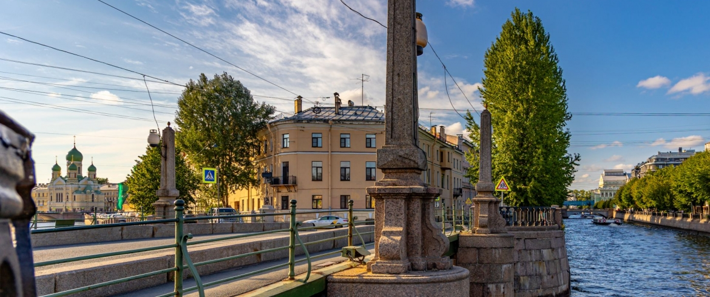
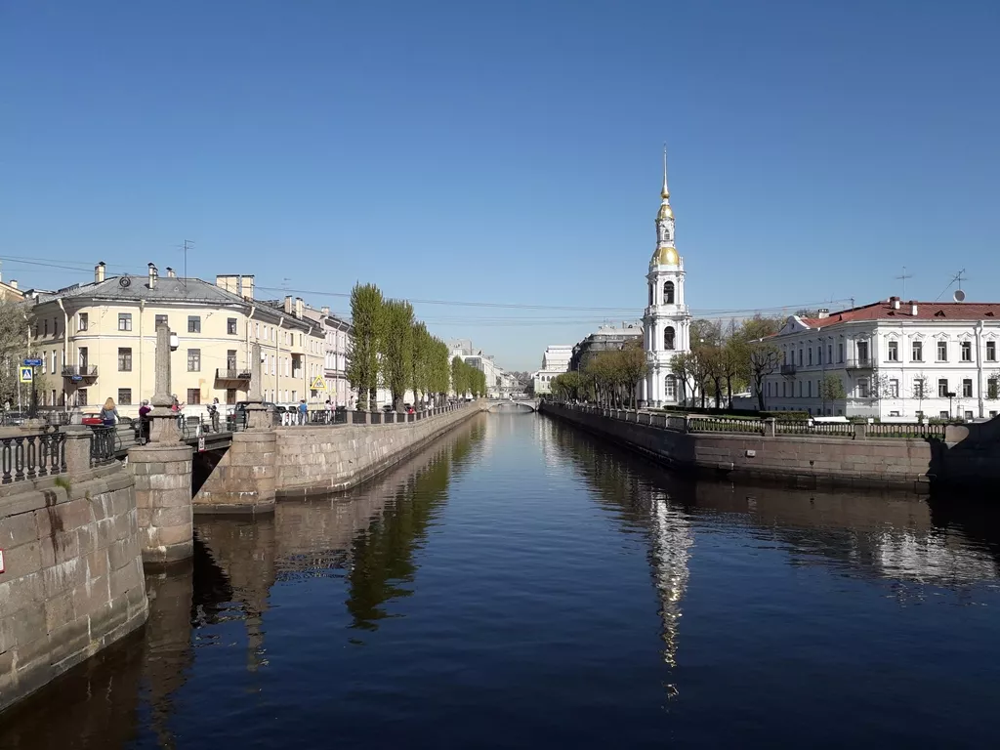
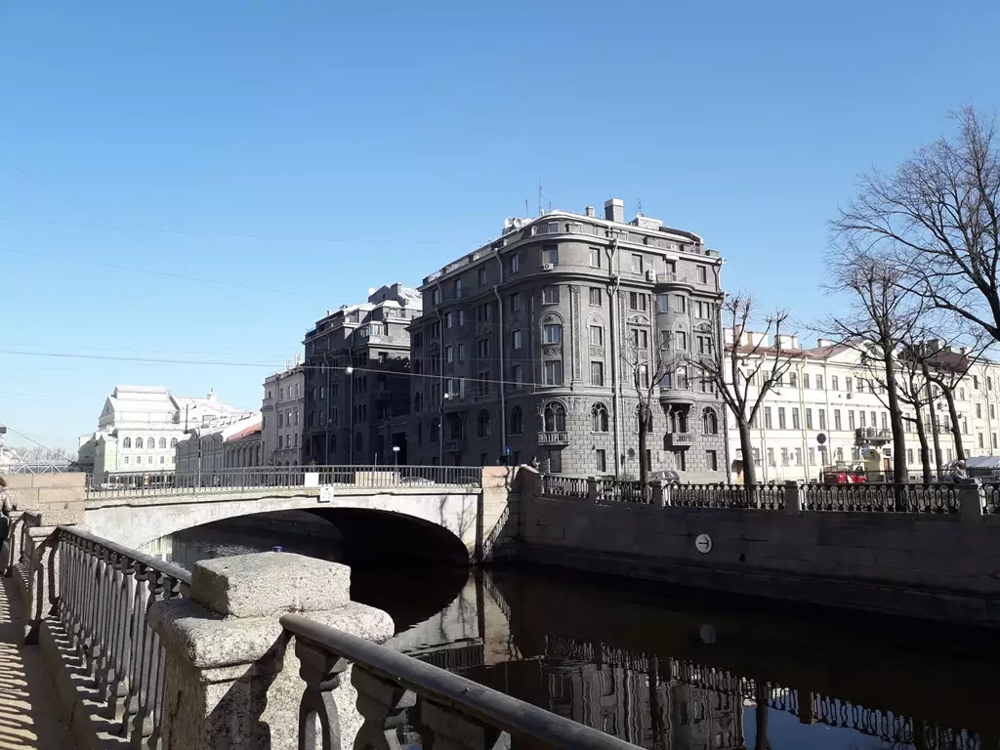
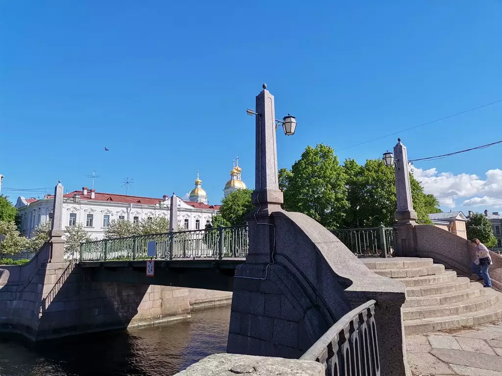

Семимостье

Легенда
Это место считается «точкой силы», где пересекаются энергетические потоки города. Существует поверье: если встать на Пикаловом мосту так, чтобы увидеть сразу семь других мостов, и загадать желание, оно обязательно сбудется.

Нужно повернуться вокруг своей оси, отыскать взглядом все мосты и зафиксировать образ в голове. Особую силу загадывание имеет 7-го числа в 7 часов вечера.

Что было на самом деле
Это уникальная архитектурно-градостроительная точка. С Пикалова моста действительно можно увидеть: Красногвардейский, Ново-Никольский, Старо-Никольский, Смежный, Могилевский, Кашин и Торговый мосты.

С точки зрения урбанистики это одна из самых живописных панорам Коломны, сохранившая облик Петербурга XIX века. Мистический ореол вокруг числа «7» здесь возник уже в современное время как часть туристического маркетинга.
← Назад к карте